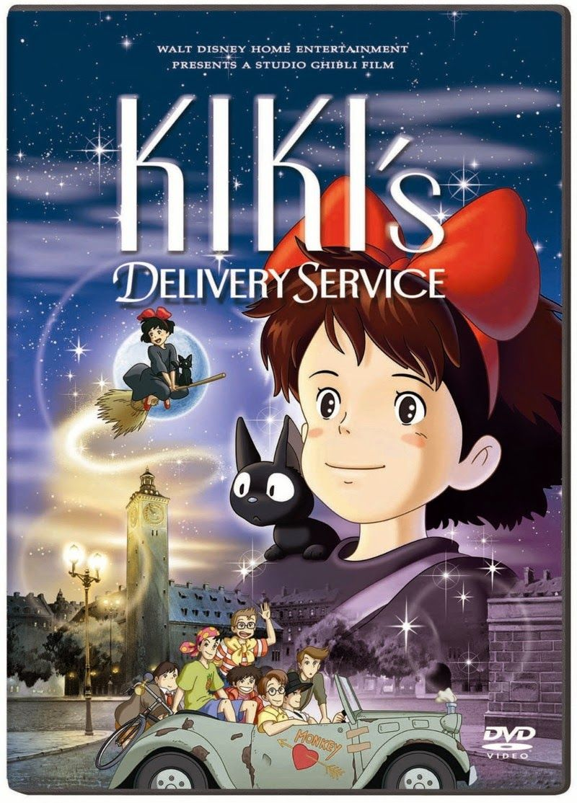
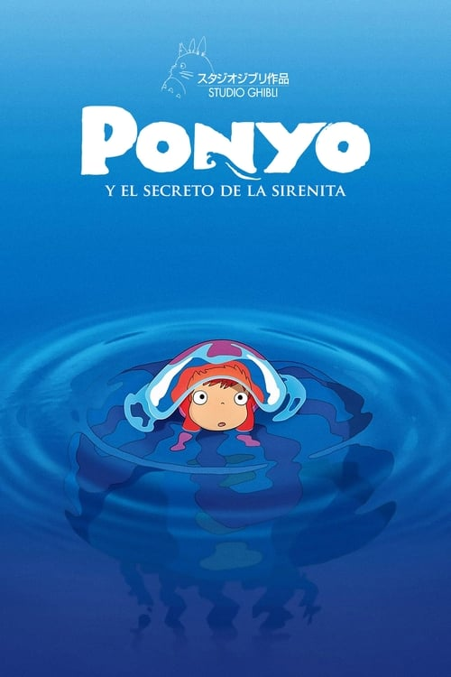
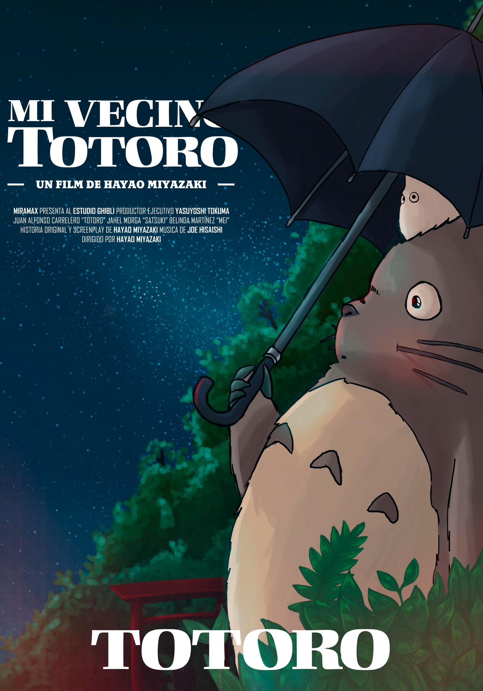
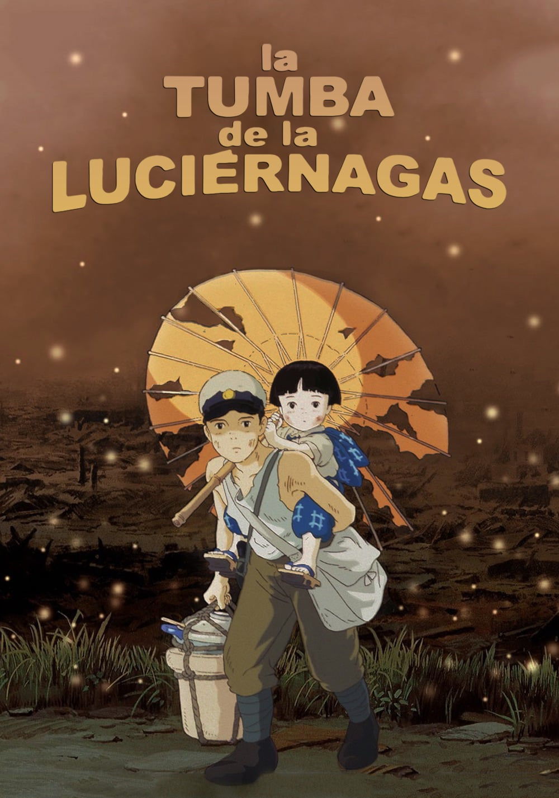
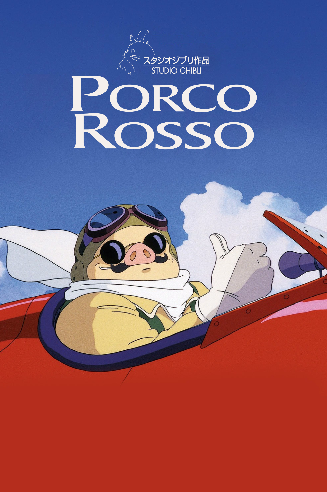
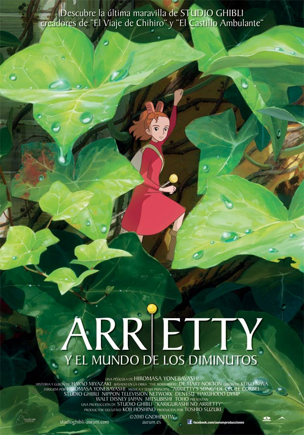
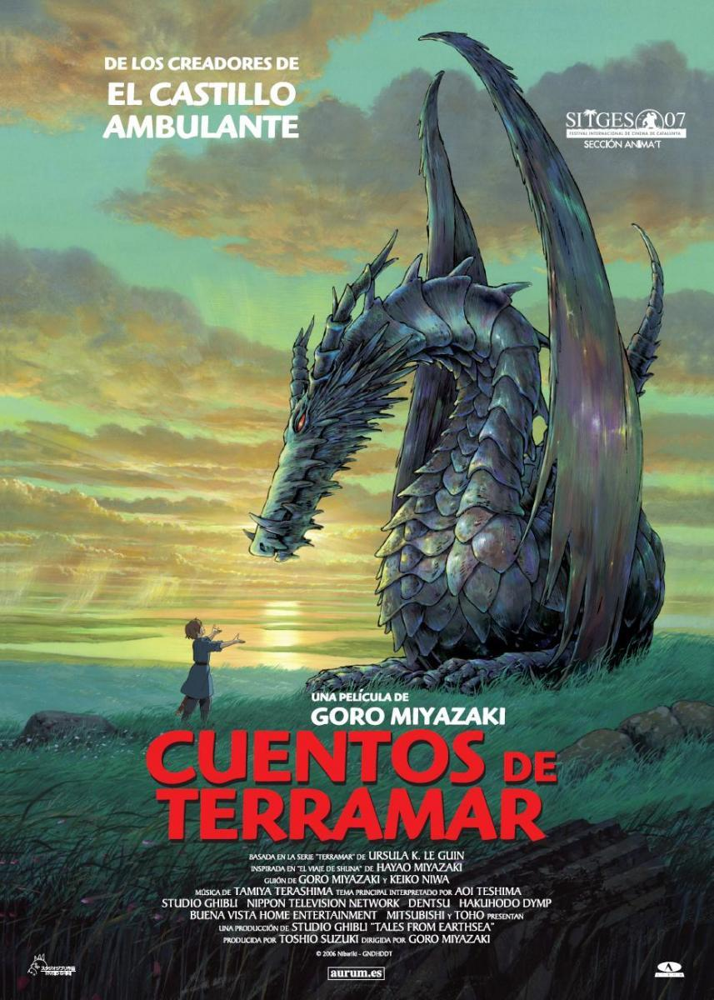
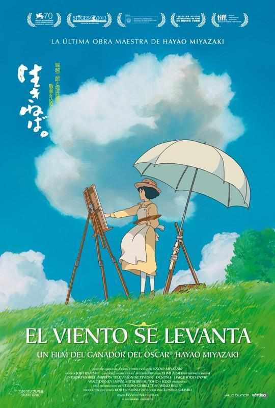
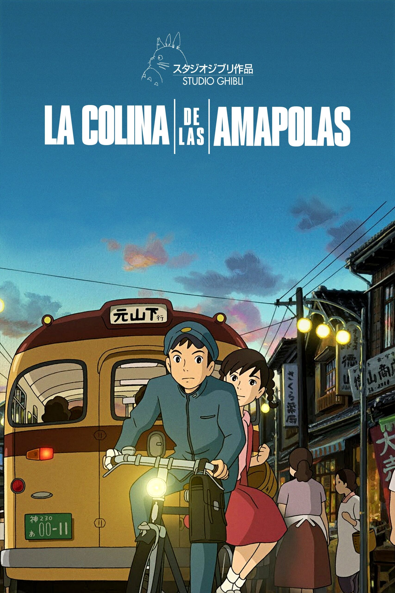

Studio Ghibli


El viaje de Chihiro
2h 5min - 2001 - Max

Kiki: entregas a domicilio
1h 42min - 1989 - Max

El increíble castillo vagabundo
1h 59min - 2004 - Max

La princesa Mononoke
2h 13min - 1997 - Max

Ponyo y el secreto de la sirenita
1h 43min - 2008 - Max

Mi vecino Totoro
1h 26min - 1988 - Max

La tumbra de las luciérnagas
1h 28min - 1988 - Vudu

Porco Rosso
1h 34min - 1992 - Max

Arrietty y el mundo de los diminutos
1h 34min - 2010 - Max

Cuentos de Terramar
1h 55min - 2006 - Max

El viento se levanta
2h 06min - 1984 - Max

La colina de las amapolas
1h 31min - 2011 - Max